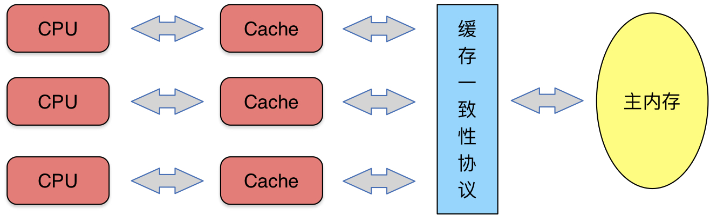
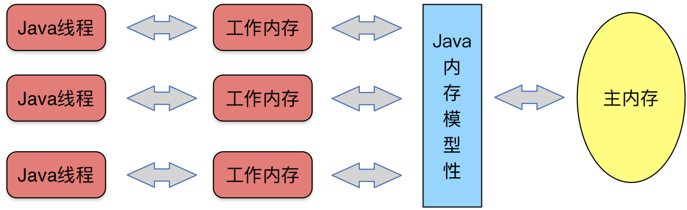

了解内存模型能帮助我们写出更好的并发代码，这部分内容在实际开发过程中十分重要。这篇博客主要参考了《深入理解Java虚拟机》和《Java并发编程实战》中的内容，对Java内存模型的一些基本概念进行总结。
内存模型由来
CPU的处理速度相对于内存读写速度要快上许多，两者有几个数量级的差距。为了让数据读写操作不给CPU处理拖太多后腿，现代计算机系统采用了两种方式：
加入了一层读写速度尽可能接近处理器运算速度的高速缓存（Cache）来作为内存与处理器之间的缓冲（如下图），以此来减少从内存读取速度的次数。
对代码进行乱序执行（Out-of-Order Execution）优化。

这两种方式解决了处理器与内存的速度矛盾，但是也带来了一些问题：
缓存一致性问题：在多处理器系统中，每个处理器都有自己的高速缓存，而它们又共享同一主内存，当多个处理器的运算任务都涉及同一块主内存区域时，就可能导致各自的缓存数据不一致。
指令重排问题：乱序执行优化仅保证乱序执行结果与顺序执行结果一致，并不能保证中间结果的正确性，因此在并发过程中，如果一个任务依赖于另一个任务的中间结果，则会产生问题。
为了解决这两个问题，就需要对数据的读写设定一些规则（或者称为协议），满足这些协议的读写过程就能保证程序的正确执行。而内存模型指的就是在满足这些协议的情况下，对内存或者Cache中数据进行读写访问的过程抽象。
Java内存模型
第一节介绍了物理机相关的内存模型，其中的一些概念可以直接类比到JVM中。

每个Java线程都可能使用不同的处理器，也就会有自己的数据缓冲区来暂时存储主内存中的数据，从而就产生了缓存一致性问题；同时Java程序在编译阶段、运行时、CPU执行阶段都可能被进行指令重排序。
同样的，JVM也需要定义一套协议来解决上述问题，同时，这套协议需要屏蔽掉各种硬件和操作系统的内存访问差异，以实现让Java程序在各种平台下都能达到一致的内存访问效果。
下面就对Java的一些数据访问规则进行介绍。
Java数据访问规则
volatile型变量的特殊规则
可见性是我们最常讨论的关于volatile的性质。这里可见性是指当一条线程修改了这个变量的值，新值对于其他线程来说是可以立即得知的。
禁止指令重排是volatile的第二个重要性质，DCL模式就是该性质的一个典型应用
Java会在volatile变量的写操作完成后添加一个lock指令，它的作用是使本CPU的Cache写入内存，该写入动作也会引起别的CPU或者别的内核无效化其Cache。这样就实现了变量的写每次都直接写入内存，变量的读每次都从内存中读。同时，lock指令放在变量赋值、对象初始化操作之后，这样其他线程能获取对象的reference时，对象一定已经初始化完成了。
public class Singleton{
private static volatile Singleton single; //声明静态的单例对象的变量
private Singleton(){} //私有构造方法
public static Singleton getSingle(){ //外部通过此方法可以获取对象
if(single == null){
synchronized (Singleton.class) { //保证了同一时间只能只能有一个对象访问此同步块
if(single == null){
single = new Singleton();
}
}
}
return single; //返回创建好的对象
}
}
final型变量的特殊规则
final型变量在Java内存模型方面的主要性质也是禁止指令重排。final修饰的类变量在初始化过程中具有如下性质：
- 该变量的初始化不会被重排序到构造函数之外，也就是对某个类进行实例化时，当构造函数返回，final修饰的类变量一定已经初始化完成。
在类初始化禁止指令重排方面volatile和final功能类似。